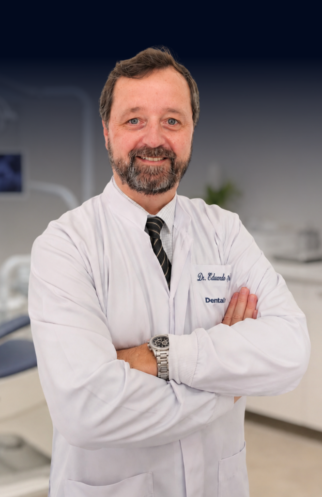
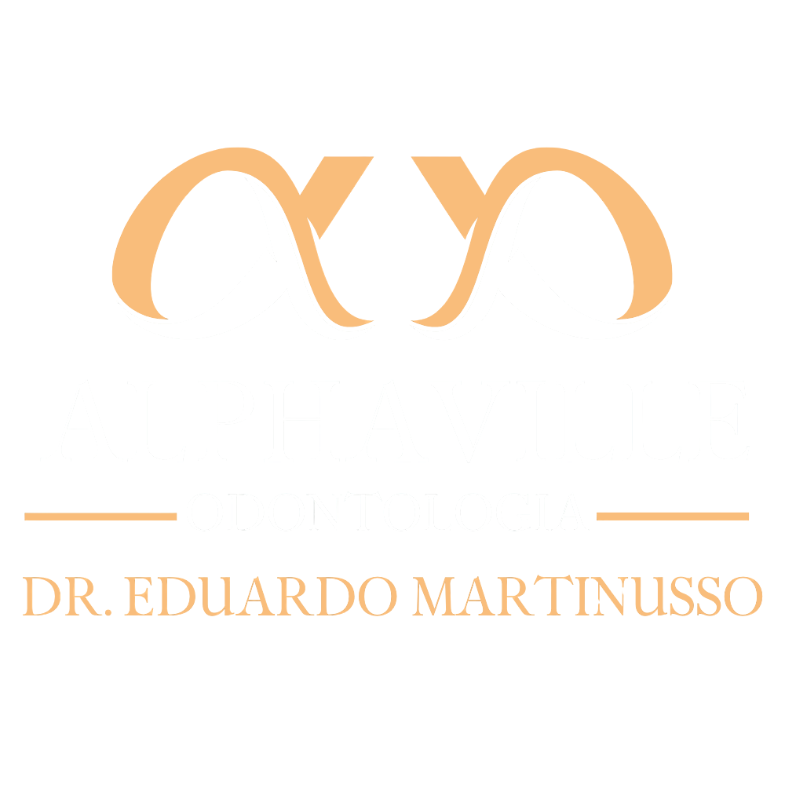

Resultados Reais
Sorrisos Radiantes que Falam por Si
Cada sorriso clareado é uma história de confiança renovada. Veja pacientes que iluminaram seus sorrisos com clareamento profissional.




Dentes mais brancos com segurança e resultados
comprovados. Técnicas profissionais e mais de 29 anos
de experiência em Alphaville.
Cada sorriso clareado é uma história de confiança renovada. Veja pacientes que iluminaram seus sorrisos com clareamento profissional.
Equipe especializada em estética dental com mais de 29 anos dedicados a sorrisos mais brancos e saudáveis.
Protocolos de clareamento de última geração com géis de alta concentração e ativação por LED/Laser.
Avaliação prévia personalizada para garantir resultados seguros, previsíveis e duradouros para cada paciente.
Ambiente projetado para reduzir a ansiedade e proporcionar uma experiência agradável durante a sessão.

Conheça cada etapa do tratamento, da avaliação ao sorriso mais branco.
Exame clínico, análise da cor atual dos dentes e verificação da saúde bucal para indicar o melhor protocolo.
Aplicação de barreira protetora nas gengivas para garantir segurança total durante o clareamento.
Gel de peróxido profissional aplicado sobre os dentes com ativação por luz LED de alta potência.
Dentes visivelmente mais brancos já na primeira sessão, com orientações para manutenção prolongada.
Cada caso é único. Descubra o protocolo ideal para você.
Agende sua Avaliação de ClareamentoDescubra por que o clareamento profissional é a opção mais segura e eficaz para dentes mais brancos.
Dentes até 8 tons mais brancos em apenas uma sessão no consultório. Transformação que você vê na hora.
Protocolo supervisionado por especialista, com proteção gengival e concentrações adequadas ao seu caso.
Um sorriso branco e radiante impacta diretamente sua confiança em fotos, reuniões e encontros.
Técnicas modernas preservam a integridade do esmalte dental, clareando sem prejudicar a estrutura do dente.
Com cuidados simples de manutenção, o clareamento pode durar de 1 a 3 anos com brilho constante.
Sessões rápidas (45 a 60 min) e sem dor. Sensibilidade passageira é facilmente controlada com dessensibilizantes.
Tecnologia de ponta em um ambiente pensado para seu conforto e segurança.


Respostas claras para as dúvidas mais comuns sobre clareamento.
Agende sua avaliação de clareamento e descubra como dentes mais brancos podem transformar sua autoestima. Sem compromisso.